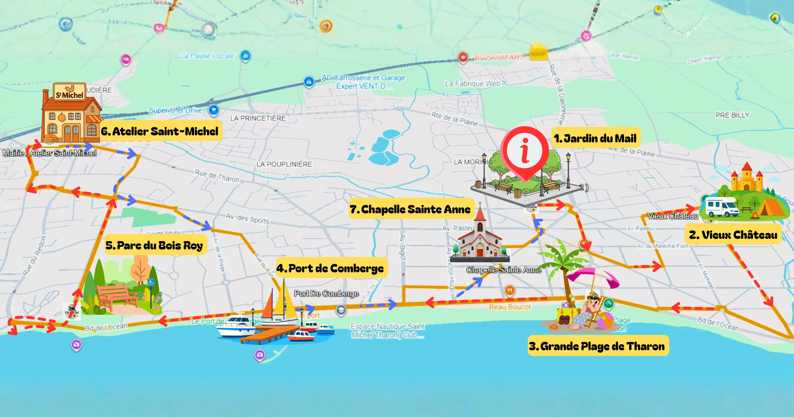

Expérience
Vivre une vraie expérience
Une balade immersive où le trajet devient un moment à part entière, entre découverte, écoute et plaisir de se laisser porter.
Montez à bord du Tharon’Tchou pour une balade familiale et immersive, où les voix du bord de mer, des habitants et des souvenirs locaux donnent vie aux lieux emblématiques de la station.
À bord du Tharon’Tchou, Tharon-Plage ne se visite pas seulement :
elle se raconte. Au fil du parcours, les voix du bord de mer, les
souvenirs locaux et les personnages de la station donnent vie aux
lieux traversés.
Une balade familiale, douce et immersive, pensée pour regarder,
écouter et redécouvrir la station autrement.
Une balade immersive où le trajet devient un moment à part entière, entre découverte, écoute et plaisir de se laisser porter.

Un format doux et accessible, pensé pour les enfants, les parents, les vacanciers et les habitants curieux.

Une autre manière de parcourir la station, de voir les lieux familiers autrement et de profiter du bord de mer sans reprendre la voiture.

Voix, ambiances et anecdotes locales accompagnent le parcours pour donner vie aux paysages traversés.
À bord du Tharon’Tchou, profitez d’une balade douce pour découvrir les plages, les commerces, les animations et les lieux emblématiques de Tharon-Plage.

Carte indicative du parcours.
Billet simple, pass journée ou pass semaine : profitez du Tharon’Tchou selon votre programme et votre rythme.
Une balade complète à bord du Tharon’Tchou.
7 €
Pour une balade audio-guidée.
À partir de 12 ans
5 €
Tarif enfant pour profiter du trajet en famille.
De 3 à 11 ans
Gratuit
Sous réserve des conditions précisées en billetterie.
Plusieurs trajets pendant la durée de validité du pass.
9 €
Idéal pour monter et redécouvrir le parcours dans la journée.
À partir de 12 ans
7 €
Une formule souple pour profiter du train en famille.
De 3 à 11 ans
24 €
Une formule pratique pour les séjours à Tharon-Plage.
À partir de 12 ans
16 €
Pour profiter librement du parcours pendant le séjour.
De 3 à 11 ans
Évènements saisonniers
3 €
Tarif unique pour tout le monde
Toujours gratuit pour les moins de 3 ans
Tarifs réduits sur présentation d’un justificatif. Les horaires et conditions d’embarquement sont précisés sur la billetterie.
Voir les conditions